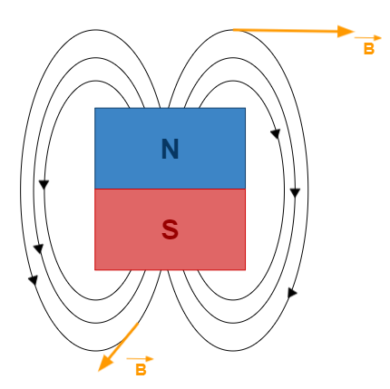
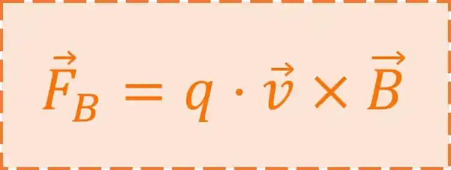

Eletromagnetismo
O magnetismo está relacionado com a criação de campos, os quais geram atração ou repulsão conforme a interação entre os pólos. Um ímã é um material que possui dois focos magnéticos opostos e inseparáveis. Eles são nomeados, por convenção, como pólo norte e polo sul. O composto imantável é capaz de atrair elementos como Níquel, Ferro e Cobalto.
Interação entre ímãs
Quando dois ou mais ímãs são aproximados, eles podem interagir por repulsão ou por atração. Isso acontece da seguinte forma:
Polos iguais (norte + norte ou sul + sul): ocorre a repulsão entre os materiais, e ocorre uma força de afastamento;
Polos diferentes (norte+sul): os objetos se atraem e é gerada uma força de aproximação;
Campo magnético
A grandeza do campo magnético, representada pela letra B, é determinada pela interação entre o pólo e o pólo sul do ímã e pode ser quantificada pela unidade Tesla (T). O campo possui o seguinte direcionamento: do norte magnético para o sul magnético. As linhas que demarcam essa relação são chamadas de linhas de indução. Quanto maior o número de linhas e quanto mais próximas elas estiverem, mais intenso é o vetor campo magnético. Ao determinar o vetor B, ele aparece perpendicularmente às linhas de campo, conforme mostra a figura seguinte:

Força magnética
Quando uma partícula eletricamente carregada movimenta-se sobre uma região de campo magnético, surgirá sobre ela a ação de uma força denominada de força magnética. Os vetores velocidade da partícula, campo magnético e força magnética são perpendiculares entre si. O valor do vetor força magnética é dependente do valor do campo magnético (B), da quantidade de carga do objeto em movimento (q), da velocidade dessa carga (v) e do ângulo entre essa velocidade e as linhas de campo ( θ). Isso está descrito na seguinte equação:
Note que:
Quando θ = 0º ou θ = 180º, o sen θ = 0 e a força magnética é igual a 0 e o movimento da partícula pelo campo magnético é considerado retilíneo e uniforme; Se θ = 90º o sen θ = 1 e a fórmula alcançará seu máximo valor, com a equação Fm= |q|.v.B.
Indução eletromagnética
A indução eletromagnética acontece quando a variação de campo magnético próximo a um condutor elétrico induz uma força eletromotriz. Em termos básicos, isso ocorre quando o número de linhas de indução varia em um condutor elétrico e surge uma corrente elétrica. A fórmula que representa isso varia conforme o tipo de ferramenta condutora utilizada, em uma espira circular, por exemplo, a fórmula será:
Onde μ0 é uma constante de indução eletromagnética, i é a corrente induzida e R é o raio da espira.